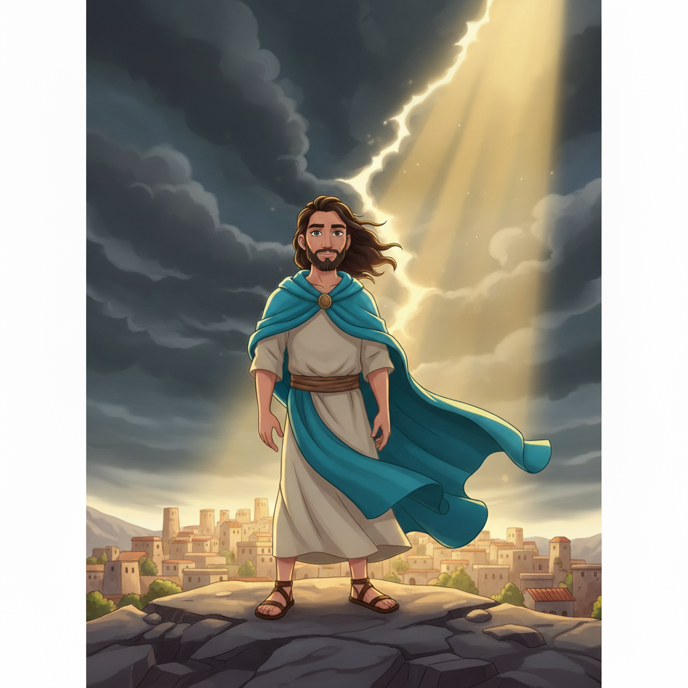
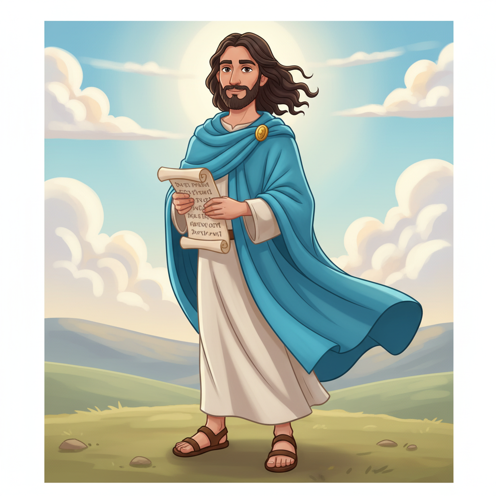
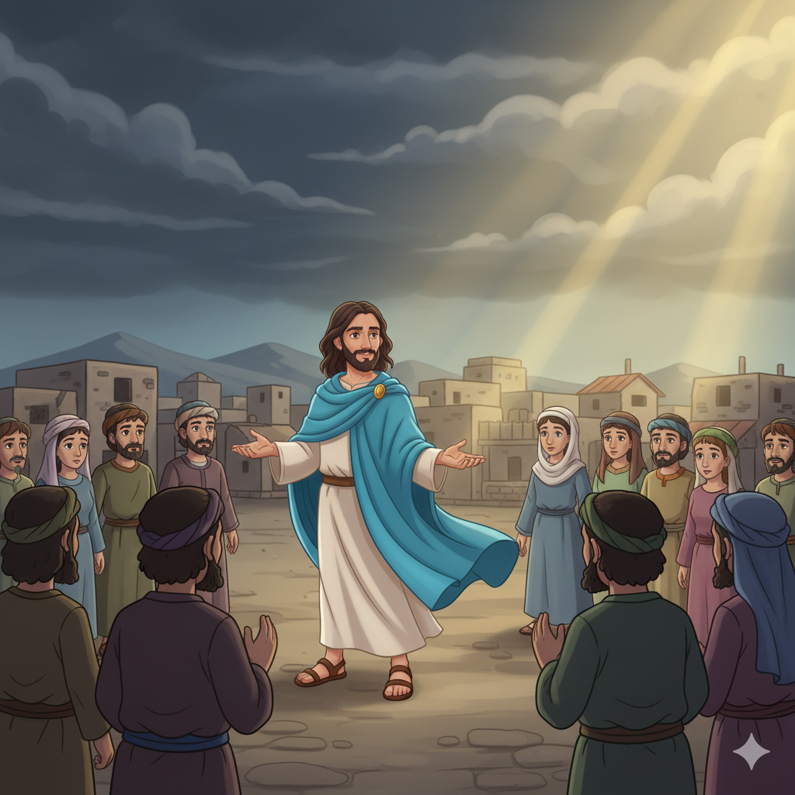
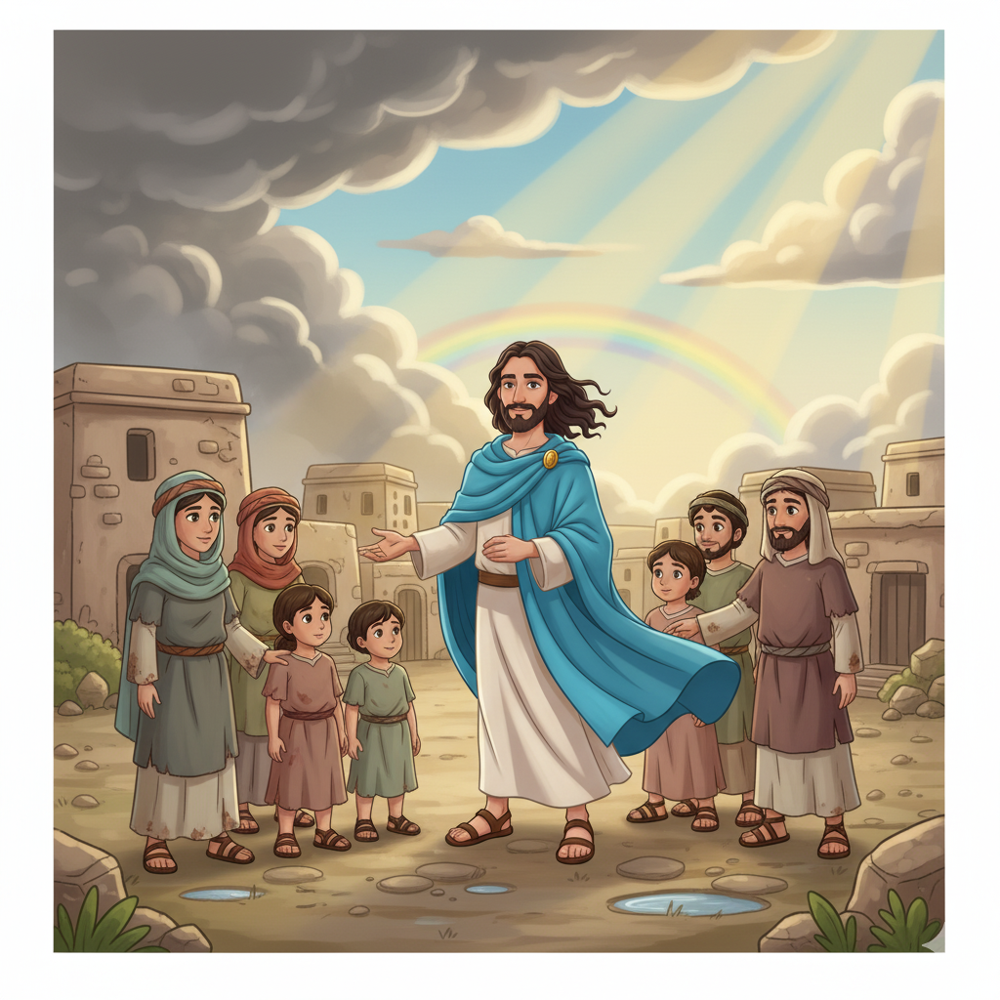
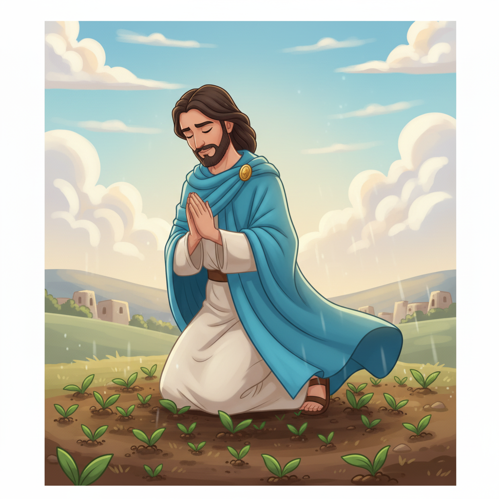
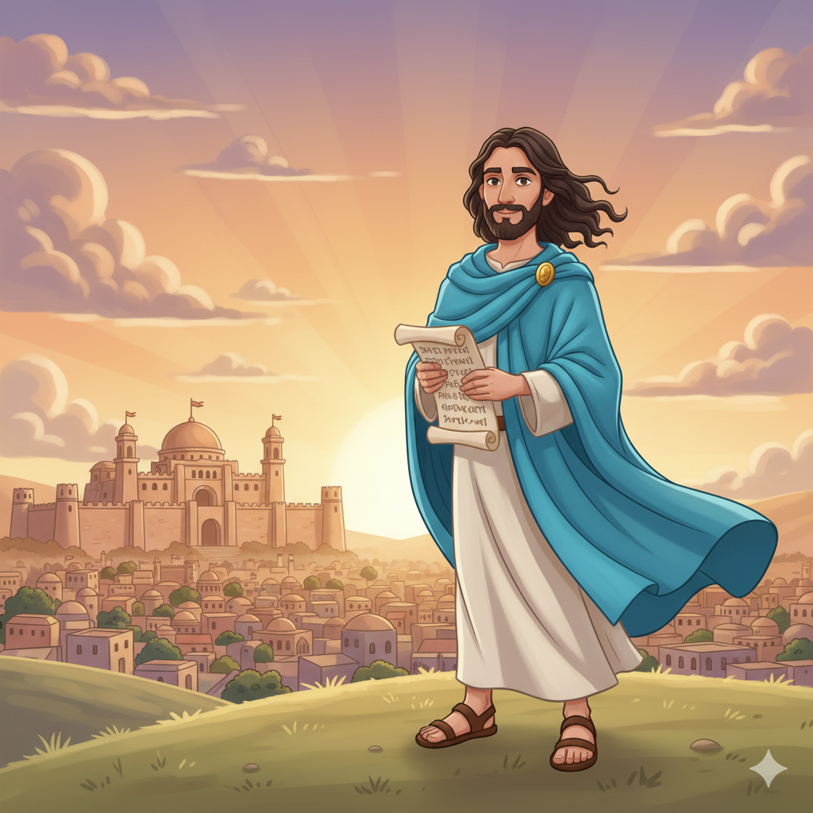

O Dia do Senhor — Um Resumo Visual para Crianças
Quando o povo esqueceu de Deus adorar,
Sofonias veio para alertar:
"O Dia do Senhor está chegando, sim!
Tempo de correção para quem fez assim."
Mas não é só castigo, não é só dor,
É um chamado ao arrependimento e amor!
📖 Sofonias 1:14-15
"Busquem o Senhor com coração sincero,
Sejam humildes, mansos, verdadeiros!
Pratiquem a justiça, andem no bem,
Pois Deus protege quem O busca também."
Não é com orgulho que se chega ao céu,
Mas com um coração pequeno e fiel!
📖 Sofonias 2:3
Depois da tempestade, vem a bonança,
Deus restaura Seu povo com esperança!
"Cantarei sobre você com alegria,
Você será Minha joia, noite e dia!"
Deus não abandona quem se arrepende,
Ele salva, renova e sempre nos defende!
📖 Sofonias 3:17
"O Senhor, teu Deus, está no meio de ti, poderoso para salvar; exultará de alegria sobre ti, renovará o Seu amor, e se alegrará sobre ti com cânticos."
📖 Sofonias 3:17
Imagine: o próprio Deus canta uma canção de amor sobre você! Esse é o versículo mais precioso de Sofonias.
Sofonias era bisneto do rei Ezequias! Ele tinha sangue real mas usou sua posição não para se gloriar, e sim para alertar o povo com uma mensagem urgente de Deus. Seu nome significa "O Senhor escondeu/protegeu".
🌟 Seu Chamado:
"A palavra do Senhor veio a Sofonias, filho de Cusí..." — Sf 1:1
Judá estava adorando Baal e as estrelas, vivendo na injustiça e no orgulho. Os líderes eram como leões que devoram os fracos. Era um momento de crise espiritual profunda na nação.
😔 O Problema:
"Os seus príncipes no meio dela são leões que rugem." — Sf 3:3
No meio do julgamento, Sofonias fala de um grupo especial: os "humildes da terra" que buscam o Senhor. Eles são o "resto" que Deus preserva, os que encontrarão refúgio no Dia do Senhor!
🌱 A Promessa:
"Deixarei no meio de ti um povo humilde e pobre, que confiará no nome do Senhor." — Sf 3:12


Sofonias anuncia o "Dia do Senhor" — um julgamento sobre Judá por adorar Baal, as estrelas e se misturar com práticas pagãs. É descrito como um dia de trevas, angústia e trombeta. Um alerta urgente: "Silêncio diante do Senhor Deus!"
Sofonias pronuncia julgamentos sobre as nações vizinhas: Filisteia, Moabe, Amom, Etiópia e Assíria (Nínive!). Mas no meio dos julgamentos, há um convite: "Buscai o Senhor, todos os humildes da terra!"
Jerusalém é julgada por sua rebeldia, mas o final é de alegria imensa! Deus promete reunir os dispersos, purificar os lábios dos povos para que O adorem, e cantar sobre Seu povo com alegria — o versículo 3:17!
✨ Estrutura:
Julgamento → Arrependimento → Restauração
O padrão que se repete nos profetas!
"Dia do Senhor" (יוֹם יְהוָה) aparece mais em Sofonias do que em qualquer outro profeta. Ele mostra que o julgamento de Deus não é só para Israel — é para todas as nações que vivem em rebeldia e orgulho!
Sofonias 3:9 é revolucionário: "Purificarei os lábios dos povos para que todos invoquem o nome do Senhor." Uma visão de salvação universal — todos os povos adorando a Deus — 600 anos antes de Jesus!
Sofonias 3:17 é único em toda a Bíblia: é o único lugar onde Deus é descrito cantando! Deus exulta de alegria sobre Seu povo com cânticos. Que imagem de amor!


O principal propósito é despertar o povo antes que seja tarde! Sofonias usa a imagem do "Dia do Senhor" para criar urgência. É como um alarme de incêndio que toca antes do fogo chegar.
Sofonias vai contra a cultura do poder e do orgulho. Deus olha para o pequeno, o esquecido, o "resto humilde" — e é sobre eles que Deus canta! A humildade é o caminho para a proteção divina.
Mesmo falando de julgamento, o livro termina com alegria! Deus não quer destruir — Ele quer restaurar, reunir, purificar e cantar sobre Seu povo. O julgamento serve à restauração.
"Busquem o Senhor, todos os humildes da terra!"
📖 Sofonias 2:3
Sofonias é o único profeta que traz uma genealogia de quatro gerações (1:1)! Ele era bisneto do rei Ezequias, um dos melhores reis de Judá. Tinha tudo para se orgulhar — mas escolheu a humildade que ele mesmo pregava!
Sofonias 1:15 ("dia de ira, dia de tribulação e angústia") inspirou o famoso hino medieval latino "Dies Irae" (Dia da Ira). Essa melodia apareceu em filmes como O Rei Leão, Fantasia e até na música clássica de Mozart e Verdi!
Sofonias 3:9 fala de Deus purificando os lábios de "todos os povos" para adorarem ao Senhor. Essa visão de adoração universal — judeus e gentios juntos — seria cumprida no Pentecostes descrito em Atos 2!

Sofonias 3:14-15 diz: "Canta de alegria, ó filha de Sião... O Rei de Israel, o Senhor, está no meio de ti!" Esse texto é o pano de fundo da entrada triunfal de Jesus em Jerusalém — o Rei chegando ao meio do Seu povo!
"O Senhor, teu Deus, está no meio de ti" (Sf 3:17) encontra sua realização máxima em Jesus. João 1:14 diz que "o Verbo se fez carne e habitou entre nós" — Deus literalmente no meio do Seu povo, cumprindo a promessa de Sofonias!
Sofonias 3:9 promete que Deus purificará os lábios dos povos para que todos O invoquem. No Pentecostes (At 2), pessoas de todas as nações ouvem o evangelho em suas línguas — cumprimento desta visão universal de Sofonias!
🔑 A Grande Conexão:
Sofonias promete: "O Senhor está no meio de ti" (3:17) → Jesus é o Deus que veio habitar no meio de nós (Jo 1:14) → O Espírito faz cada cristão ser habitação de Deus (1Co 6:19)
Sofonias era como um alarme — um aviso antes do perigo chegar. Quando Deus coloca um "alarme" na sua vida (uma voz na consciência, um conselho de um adulto), você presta atenção ou ignora?
Sofonias 3:17 diz que Deus canta de alegria sobre você! Como é saber que Deus te ama tanto a ponto de cantar? Isso muda como você se vê?
Deus promete proteger os "humildes da terra" (Sf 2:3). O que é ser humilde para você? É diferente de ser tímido ou fraco? Como você pode ser mais humilde no dia a dia?
Deus canta sobre você (Sf 3:17), então cante para Ele! Escolha uma música de louvor favorita e cante com toda a sua voz essa semana. Se quiser, escreva sua própria letra baseada em Sf 3:17!
Sofonias 2:3 diz "busquem a humildade". Escolha um ato de humildade para esta semana: peça perdão a alguém, ajude sem ser visto, ou deixe outra pessoa ser o destaque num momento.
Memorize Sofonias 3:17 completo e recite para alguém da família. Explique que esse versículo mostra Deus cantando sobre nós — e pergunte como eles se sentem sabendo disso!
Trilho Kids | Desenvolvido com ❤️ para crianças © 2025